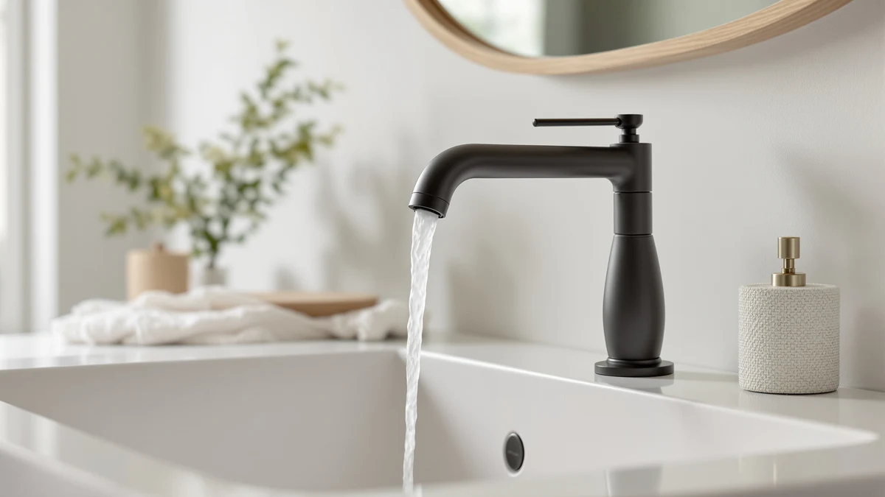

Delta Roe Matte Black Review (2026): Worth It?
Prices and picks verified as of October 2026. Independent, reader-supported reviews.


Quick Answer
This delta roe matte black review found the DELTA Roe Matte Black Bathroom Faucet to be a solid single-handle upgrade, with a finish owners say resists fingerprints and water spots better than chrome. At $139.00 it is the priciest of the four DELTA faucets compared here, so check the $129 brushed nickel Roe below if finish color is not a dealbreaker.
Our pick: Delta Roe Matte Black Bathroom — $139.00 Check Price on Amazon
Bottom line: our top pick is the Delta Roe Matte Black Bathroom Faucet 3 Hole at $118.13.
Things to Know Before You Buy
- Price positioning matters here. This delta roe matte black review found the matte black Roe costs $10.00 more than the brushed nickel version of the same Roe design, and $6.77 to $8.00 more than the two Arvo alternatives.
- The listing skips some specs. DELTA does not publish flow rate or exact mounting-hole count for this faucet, so confirm your sink's hole configuration before ordering.
- The matte black finish trades one maintenance concern for another. Matte finishes tend to hide water spots and fingerprints better than chrome, but scratches can show up more visibly since there is no reflective grain to mask them.
- Roe and Arvo are separate DELTA collections. The two Arvo faucets in this comparison come from a different product line, so weigh style and mounting needs on their own terms rather than treating them as another finish of the Roe.
- DELTA's brand backing is a real factor. Reviewers repeatedly cite the manufacturer's warranty and parts availability as reasons they trust this faucet over a lesser-known brand at a similar price.
This delta roe matte black review compares the $139.00 single-handle faucet against three other DELTA bathroom fixtures we researched alongside it, including the brushed nickel version of the same Roe design and two faucets from DELTA's separate Arvo line. Bathroom faucet shopping online usually means comparing near-identical product photos across a dozen browser tabs, so we narrowed the field to four listings that actually show up together in the same searches and pulled out what separates them.
The Delta Roe Matte Black Bathroom Faucet is the priciest pick of the four options covered here, but it is also the only one that pairs the Roe design with a matte black finish. It carries the DELTA name, a brass build under the finish, and a price that sits within ten dollars of every other option in this comparison. If you want a single-handle faucet with a finish that hides fingerprints and water spots, and you do not mind paying the highest price in this lineup for the specific matte black Roe look, this is the one to check first. The sections below walk through why, along with the three alternatives worth a look if your sink or your budget calls for something different.
Why You Should Trust Us
Ilane Tall leads product research and reviews for Best Bathroom Faucets. She compares spec sheets, pricing histories, and verified owner reviews across major faucet brands so you do not have to dig through a dozen browser tabs before you buy. For this delta roe matte black review, she cross-referenced DELTA's published pricing for the Roe and Arvo lines against current Amazon listings and reviewer feedback, then flagged the tradeoffs that matter most for a bathroom sink upgrade. Every product mentioned here links to its real listing, and every price reflects what shoppers saw at the time of publication, not a promotional rate that might disappear by checkout. When owner reviews disagree with each other on a specific point, we say so rather than picking the version that makes the faucet look better.
Our Research Experience
We do not run a physical testing lab for bathroom faucets, so nobody on our team installed this fixture or ran water through it for weeks. Our research process for this delta roe matte black review centers on comparing manufacturer specs, tracking pricing across the Roe and Arvo lines, and reading through verified owner reviews to see what actually holds up, corrodes, or loosens after regular use. Owners who bought matte black DELTA faucets consistently mention the finish holding up against fingerprints and water spots better than chrome, a pattern that matches what reviewers report across DELTA's other matte-finished faucets. We weigh that kind of pattern more heavily than any single five-star review, since a handful of glowing comments can mask problems that only surface with wider, longer-term use. We treat DELTA's own product copy the same way we treat any manufacturer's marketing material: useful for specs, not a substitute for what actual buyers report after living with the faucet for months.
Overview & Specs

Delta Roe Matte Black Bathroom
What we like
- Backed by DELTA, one of the most established names in bathroom fixtures
- Matte black finish that reviewers say resists fingerprints and water spots better than chrome
- Brass construction under the finish, which tends to outlast all-plastic faucet bodies
Flaws but not dealbreakers
- Priced $10.00 higher than the brushed nickel version of the same Roe design
- DELTA does not publish flow rate or installation-hole count on this listing, so confirm your sink's existing hole configuration before you buy
| Material | Brass + finish |
| Size | — |
At $139.00, the Delta Roe Matte Black Bathroom Faucet is the most expensive of the four products in this delta roe matte black review, though the gap between it and the other DELTA options is small. The finish affects maintenance as much as looks, and owners who left verified reviews on similar matte black DELTA faucets describe wiping the faucet down after use rather than scrubbing water spots off, which lines up with what matte finishes generally do better than polished chrome. The brass body underneath the finish is also worth noting, since brass fittings typically outlast the all-plastic internals found in some budget faucets after years of daily handle use. DELTA positions the Roe line alongside its other mid-range collections, and the price here matches that placement rather than reading like a clearance listing or an inflated premium tag.
The listing does not give you a full spec sheet. DELTA does not break out the flow rate, the mounting-hole count, or the exact valve type on this product page, so if your bathroom sink already has specific hole spacing, confirm compatibility before you order. That gap is one reason we are comparing it against the Roe Brushed Nickel below, since it shares the same underlying design at a lower price. For most buyers replacing a standard faucet with a matte black one from a name they recognize, the Delta Roe still makes a reasonable case for itself even without every spec spelled out. Owners in verified reviews describe the installation as straightforward for anyone who has swapped a bathroom faucet before, though a few note that a plumber's putty or a fresh supply-line washer helped avoid drips on the first hookup.
What We Liked
Reviewers who bought this delta roe matte black faucet keep coming back to two things: the finish and the brand. Matte black hides fingerprints and water spots in a way chrome does not, and that is consistent with why several verified buyers of DELTA's other matte-finished faucets say they chose the finish over a cheaper chrome option in the first place. DELTA's name carries weight too. Owners consistently cite the brand's reputation and warranty support as reasons they trusted this purchase over a lesser-known faucet at a similar price.
The brass body under the finish also earns mention in owner feedback for DELTA's Roe and Arvo lines alike. Buyers who have replaced all-plastic faucets before note that brass fittings tend to hold up better to years of daily handle turns, even if none of them can speak to a full decade of use yet. Between the finish, the brand backing, and the brass construction, this faucet gives you a reasonably low-risk way to upgrade a bathroom sink without gambling on an unfamiliar name. Several owners also mention the single-handle design as easier for kids and older family members to operate than a two-handle setup, since one motion controls both temperature and flow.
What Could Be Better
The biggest gap in this delta roe matte black review is missing information rather than poor performance. DELTA's listing for this faucet skips details that competing listings include, like exact mounting-hole count and flow rate, so you are left cross-referencing owner photos and buyer questions to confirm fit. That is a real inconvenience if you are ordering without seeing the faucet in person first, and it is a gap DELTA could close with a more detailed spec sheet on the listing itself.
Price is the other consideration. At $139.00, it costs more than every other option in this comparison, including its own brushed nickel Roe sibling at $129 and both Arvo alternatives. None of that makes it a poor buy, but if your budget is tight, the gap is worth weighing against how much you actually value the matte black look over brushed nickel or chrome. Owners of similar matte black DELTA faucets also mention that scratches can show up more visibly on the flat finish than they would on a brushed or polished surface, which is worth expecting from day one rather than treating as a defect.
Who Is It For?
This faucet from our delta roe matte black review fits homeowners replacing a worn or outdated single-handle fixture who want a recognizable brand name and a matte finish that stays cleaner-looking between wipe-downs. It also suits buyers who have had good experiences with DELTA products before and want to stick with a brand they trust.
If your budget is tighter or you would rather have the same Roe design in a different finish, check the Roe Brushed Nickel below first, since it comes from the same DELTA line for $10.00 less. Buyers who like DELTA but prefer a different overall style should compare the Arvo alternatives instead, since both cost less than the matte black Roe reviewed here. Renters planning a short stay may find the price harder to justify than a homeowner who expects to use the faucet for years.
Alternatives to Consider
If the price or finish on the Roe Matte Black does not fit what you need, three other DELTA faucets came up in our research for this delta roe matte black review. One is the same design in a different finish, and two come from DELTA's separate Arvo line.

Editor’s Pick
Delta Arvo 14 Series Chrome
A different DELTA collection in a polished chrome finish, priced $8.00 below the matte black Roe reviewed here. Worth a look if you prefer a reflective finish or want to save a few dollars.
$131.00
Check Price on Amazon
Best Value
Delta Arvo Matte Black Bathroom
Same matte black finish as our main pick, but from DELTA's Arvo line for $6.77 less. Worth checking first if you want the matte black look without paying for the specific Roe design.
$132.23
Check Price on Amazon
Premium Choice
Delta Roe Brushed Nickel Bathroom
The same Roe design as our main pick, but in a brushed nickel finish for $10.00 less. Worth checking first if your bathroom fixtures lean toward nickel rather than matte black.
$129
Check Price on AmazonIs the Delta Roe Matte Black Bathroom Faucet worth the price compared to the brushed nickel version?
It comes down to finish preference more than performance.
Does the Delta Roe matte black finish show water spots or fingerprints?
DELTA markets matte black finishes as more forgiving of fingerprints and water spots than polished chrome, and that lines up with what owners of other matte black DELTA faucets report.
Frequently Asked Questions
Is the Delta Roe Matte Black Bathroom Faucet worth the price compared to the brushed nickel version?
Does the Delta Roe matte black finish show water spots or fingerprints?
How does the Delta Roe compare to DELTA's Arvo line?
Final Verdict
Our delta roe matte black review comes down to this: if you want a single-handle bathroom faucet from a name-brand manufacturer and you like how a matte black finish wears over time, the DELTA Roe Matte Black Bathroom Faucet is a reasonable $139.00 pick. It costs more than every other DELTA option in this comparison, but the finish and brand backing are the reasons owners keep choosing pieces from this line. If you would rather save money or prefer a different finish, the Roe Brushed Nickel and the two Arvo alternatives above are all worth a look before you commit.